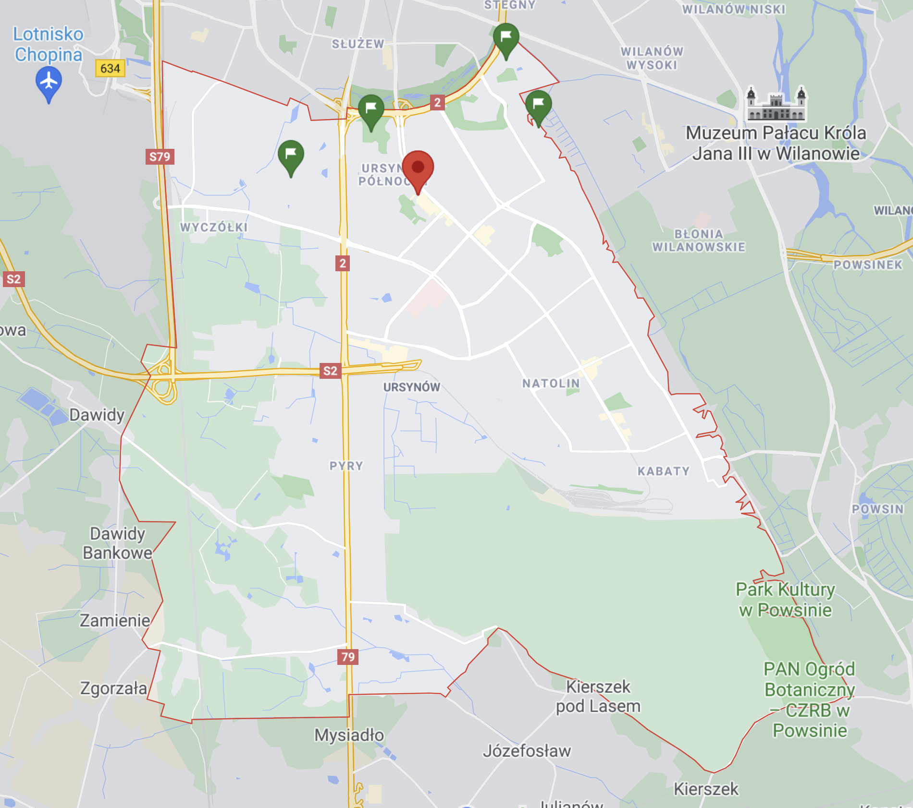
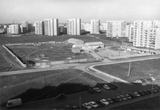
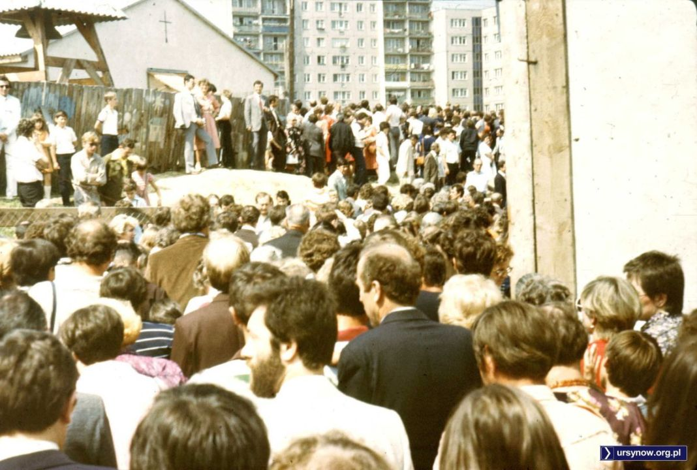

Kościół Wniebowstąpienia Pańskiego jest drugim najstarszym kościołem na Ursynowie. Kościół znajduje się koło parku Jana Pawła II.
Budowla została zaprojektowana przez zespół Marka Budzyńskiego, projektantów Ursynowa Północnego. Kościół ze względu na swój wygląd jest nazywany Malborkiem lub Warownią. Jest to jeden z najbardziej znanych warszawkich powojennych kościołów. Kościół został zbudowany w latach 80.
Przed zbudowaniem kościoła niedaleko od jego miejsca znajdowała się tymczasowa kaplica.
Kościół Wniebowstąpienia Pańskiego jest ukazany w filmie Krzysztofa Kieślowskiego "Dekalog 1".